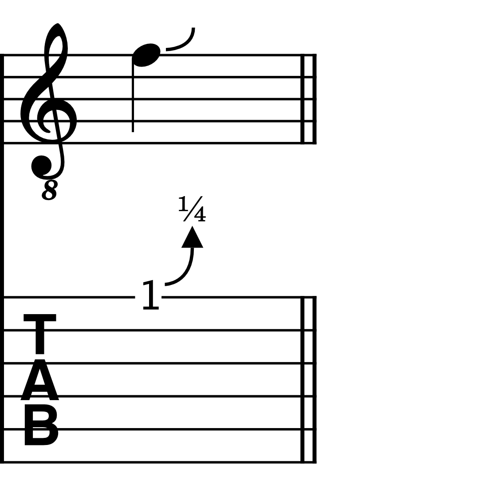
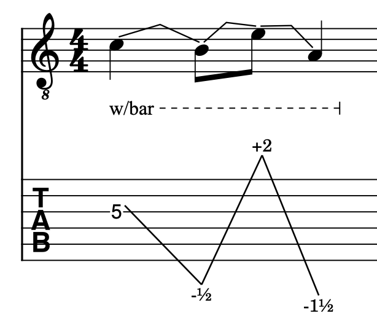
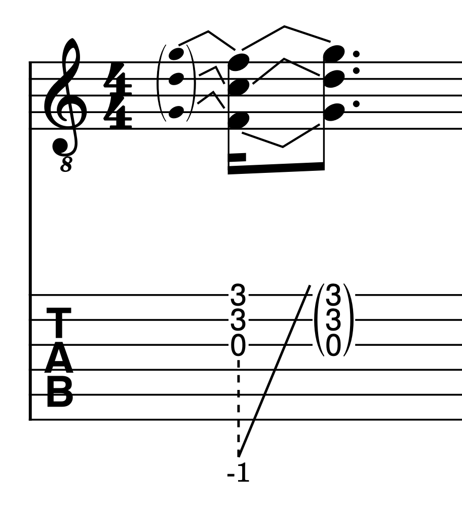
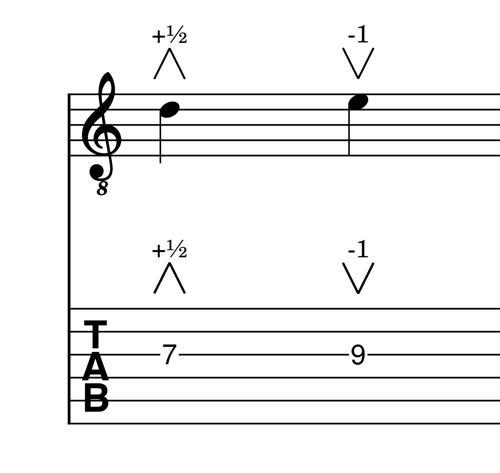
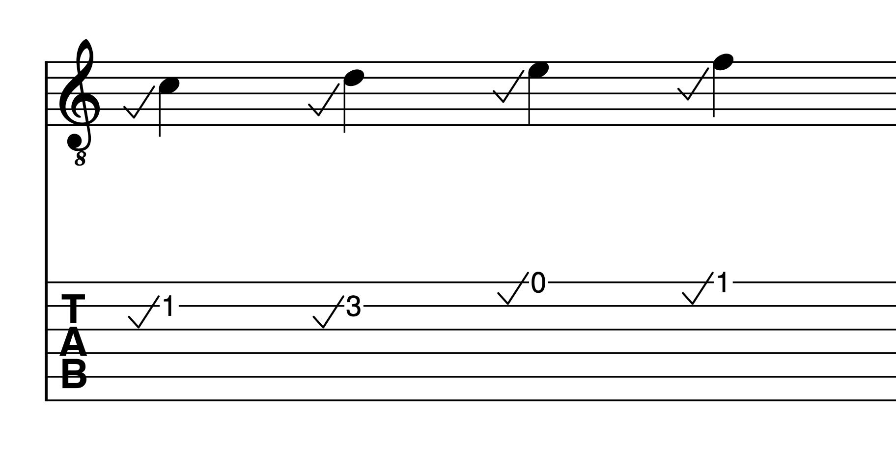
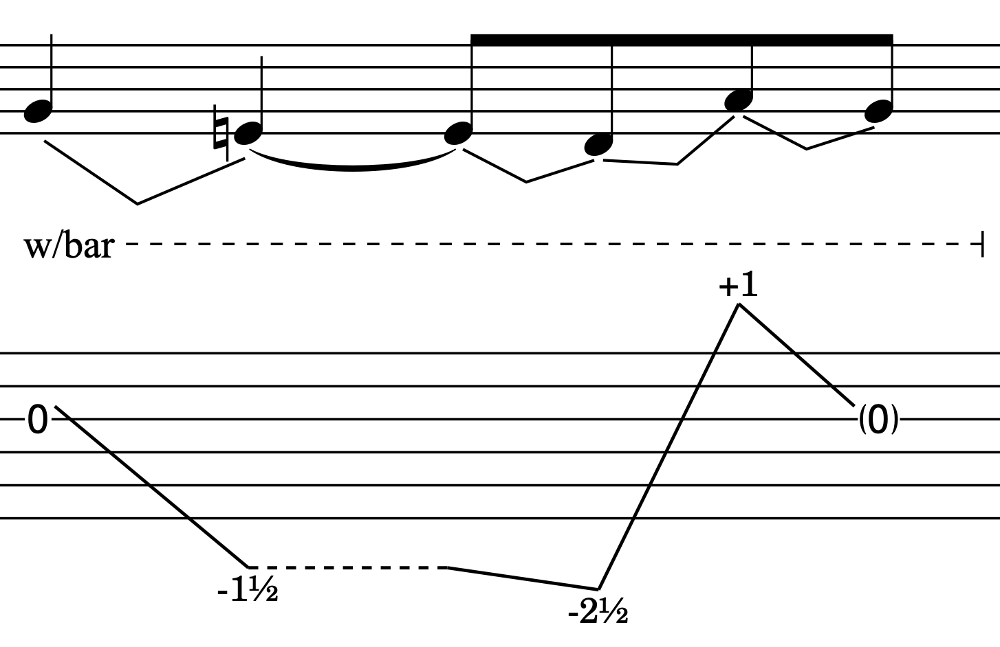
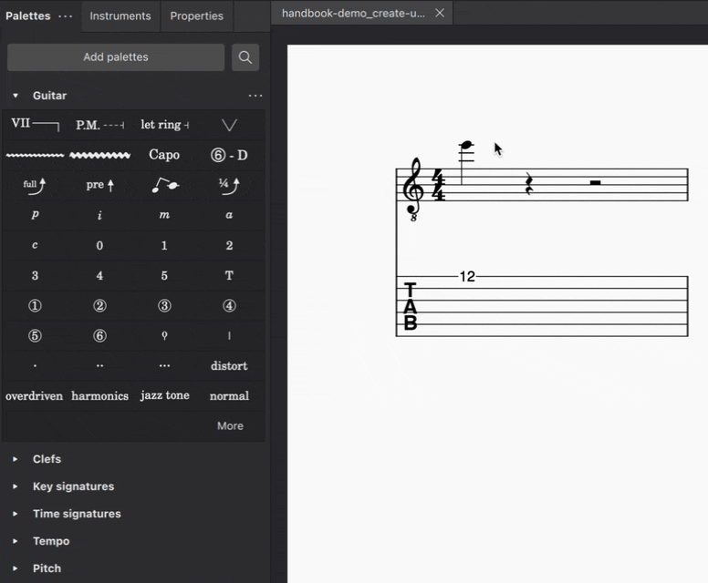

Guitar bends & dives
This page describes pitch bends and dives specifically for guitar performance. For other types of bends, see brass or woodwind instrument bends.
About bends & dives
Bend and dive lines can be used to indicate downward or upward pitch bends.
Bends are created by pulling the string upwards or downwards with the fingers stopping the strings on the fretboard.
Dives are created by pressing down or pulling up a whammy/vibrato bar attached to the bridge of the guitar.
Bends change the pitch of both individual notes and chords, whereas dives change the pitch uniformly across all strings.
The following types of bends and dives can be added to your score:
| Bends | Dives |
|---|---|
| Standard bend | Standard dive |
| Pre-bend | Pre-dive |
| Grace note bend | Dip |
| Slight bend | Scoop |
All these elements can be found in the Guitar palette.
How they work in MuseScore Studio
In most cases, bends and dives in MuseScore connect two notes together: a ‘starting note’ and an ‘arrival note’.
Bends and dives are contextual, meaning if the arrival note is higher than the starting note, an upward bend/dive will be created. Conversely, if the arrival note is lower than the starting note, a release or downward dive will be drawn.
Whenever a bend/dive is added to a tablature stave, both the starting and arrival notes will be entered as a fret positions. The arrival note, however, will be hidden by default. This allows you to create sequences of multiple bends or dives, including bend-release-bend combinations, using only the tablature stave, without needing to input notes in the standard stave. If you're working mainly in the standard stave, you may find it more convenient to hide these fret positions via the Invisible setting in the Properties panel.
In all cases, the bend/dive amount, being the intervallic distance between the starting and arrival notes, is reflected by the notated pitches on the standard stave. This allows you to see the shape of a melodic line, including the pitches created by bending the strings. It also allows the rhythm of the melodic line, including the metrical timing of any bends and dives, to be communicated clearly to the player.
On the tablature stave, the bend/dive amount is given by a numerical indicator: "1" for a whole tone, "1/2" for a half-tone (semitone), "1/4" for a quarter-tone, etc.
Adding bends and dives
You can apply all types of bends and dives to your score in any of these ways:
- Select one or more notes and click the desired bend/dive symbol in the Guitar palette
- Drag the desired bend/dive symbol from the Guitar palette on to a note or chord
- Select one or more notes, and enter the required keyboard shortcut (see details below)
Bends and dives can be added to both individual notes and chords. Simply select all the notes you want the pitch bend to apply to before adding your required bend or dive element. On the tablature stave, bend lines between chordal notes of the same intervallic value will automatically consolidate to a single intervallic number, while for dive lines connecting multiple chords, only a single line will be drawn.





A chord comprising three notes is bent down by a whole tone with the whammy/vibrato bar before being played. Once the chord is played, the whammy/vibrato bar is returned to its resting position.


Holds
Hold lines are drawn automatically wherever a note or chord containing a bend or dive is subsequently tied to one or more notes.
A hold is indicated by a dashed horizontal line. It is only ever shown in the tablature stave.

A hold connecting a pre-bend and a release

A hold showing the sustained position of the whammy/vibrato bar over one-and-a-half beats
In addition, you can manually show or hide hold lines where it makes sense to do so.
- Select a bend or dive in your score
- Open the Properties panel
- Under Hold line, select either Show or Hide to force a hold line to be drawn, or to be hidden, respectively
Modifying bends and dives
Both the intervallic amount and playback speed of bends can be adjusted in MuseScore, either by modifying the pitch of bent notes on the standard stave, or adjusting the bend/dive curve in the Properties panel.
Modifying bends and dives on the standard stave
To change the bend amount of a a bend or dive on the standard stave, simply raise or lower the pitch of either the starting or arrival note in your score. The fractional indicator in any linked tablature stave will be adjusted automatically.
Slight bends, dips, and scoops can only have their playback timing and intervallic values adjusted in the Properties panel.
Modifying bends and dives in the Properties panel
Both the pitch bend amount and its playback speed can be adjusted via the Properties panel.
To adjust the bend amount:
- Apply a bend to your score, using any of the methods outlined above
- Select the bend
- Open the Properties panel
- In the Customize bend/dive graph, click and drag the end point of the curve up or down
The bend/dive curve can also be modified using the computer keyboard alone, without requiring use of the mouse.
- Navigate to a bend or dive in your score (See Navigating the score)
- Press esc
- Use tab to navigate to the Properties panel
- Press tab until the Bend/dive section is reached
- Press the down arrow key until the Customize bend/dive section is reached
- Press spacebar to select the starting position point of the curve
- Hold alt (Option on macOS) while using the left and right arrow keys to switch between points along the curve
- Use the up and down arrow keys to modify the pitch of the selected point
The left-most point of the bend/dive curve corresponds to the starting note. The right-most point corresponds to the arrival note.
Dragging the right-most (end point) of the curve upwards raises the arrival note in ¼-tone steps. In the same way, dragging the end point downwards lowers the pitch of the arrival note. The fractional indicator in the tablature stave, and the notated pitch in the standard stave, will be updated accordingly.
To adjust the playback speed of a bend/dive:
- Select a bend/dive in your score
- Open the Properties panel
- In the Customize bend/dive graph, click and drag the start and end points of the curve left or right

Dragging a curve point horizontally changes only its playback speed, including the duration for which the starting and arrival notes are held (indicated with a horizontal line). It does not affect rhythmic notation in your score.
Special cases
Showing slackened strings
A slack line indicates when the vibrato/whammy bar is depressed to the extent that the strings become slackened and no longer produce discernible pitches.
To create a slack line:
- Select a standard dive in your score
- Go to Properties
- Click and drag the end point of the Customize dive curve all the way to the bottom of the graph
Creating unison bends
To create a unison bend:
- Create a chord containing two notes in unison (Add a unison interval to an existing note using alt+1 on Windows, or option+1 on macOS)
- Select the note to which you wish a bend to apply
- Add the desired bend (see steps above)

In the case of unison bends, it can be helpful to apply the bend in the tablature stave, where it can be easier to see which string exactly is being bent.
Customizing the style of bends & dives
To customize the appearance of bends and dives across an entire score:
- Go to Format in the menu bar
- Select Style...
- In the dialog that appears, choose Bends & dives from the list of categories on the left
The following options are available: